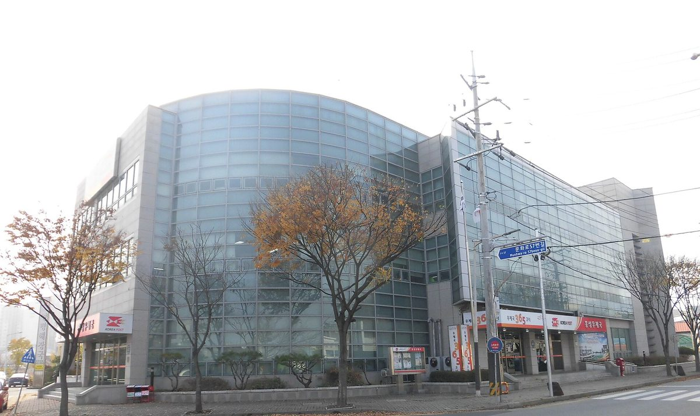

한전KDN·홍성군·충남개발공사, 공공 유휴부지 '공공주도형 태양광' 협약…발전수익은 에너지 취약계층 지원에

홍성군은 부지 발굴·행정 지원, 공사·한전KDN은 기획·구축·운영…8월 충남개발공사 협약에 홍성군 합류, 부지·용량·사업비는 아직 안 나와
한전KDN과 충남 홍성군, 충남개발공사가 군이 가진 공공 유휴부지에 태양광 발전소를 짓고 그 수익을 에너지 취약계층 지원에 쓰는 '공공주도형 태양광 발전사업'을 함께 추진하기로 하고 5일 홍성군청에서 업무협약(MOU)을 맺었다. 협약식에는 세 기관 관계자가 참석했다. 협약에 따라 홍성군은 사업 대상지를 찾고 행정절차를 돕고, 충남개발공사와 한전KDN은 사업 기획과 기술 검토, 발전시설 구축과 운영·관리를 맡으며, 한전KDN은 전력계통 운영과 에너지 정보통신기술(ICT)로 운영체계를 꾸린다. 세 기관은 지자체 소유 부지에서 나온 발전수익을 지역사회에 돌려 에너지 복지 재원으로 쓰되 지자체의 직접 재정 부담은 최소화하는 구조라고 설명했지만, 대상 부지의 위치와 면적, 설비 용량, 사업비, 수익 배분 비율, 착공 시기는 이번 협약에서 공개되지 않았다. 한전KDN은 2025년 10월 전남·나주시·영암군·영광군, 같은 해 12월 충북개발공사, 올해 8월 충남개발공사와 공공 유휴부지 재생에너지 협약을 맺어 왔으며, 이번 협약은 8월 충남개발공사와의 협력에 홍성군이 합류한 것이다. 충남개발공사는 공영주차장 등 홍성군이 관리하는 공공부지를 먼저 살펴 기존 시설 기능을 유지한 채 태양광을 올릴 수 있는지와 예상 발전량, 계통연계 가능성, 사업비와 수익성을 검토한 뒤 사업화 여부를 정하기로 했으며, 수익 배분 비율과 지원 대상, 환원 방식은 기관 간 협의를 거쳐 정할 예정이다. 한전KDN 측은 공공이 가진 유휴부지를 재생에너지 생산 기반으로 쓰고 성과를 주민과 나누는 모델을 충남으로 넓히는 "의미 있는 출발점"이라고 밝혔다.
시민에너지 관점
놀고 있는 공공부지에서 나온 발전수익을 에너지 취약계층에게 돌리겠다는 방향은 반갑지만, 이번 협약은 지자체와 공기업이 짓고 운영하는 방식이어서 주민은 수혜자일 뿐 발전소의 주인은 아니다. 공공이 직접 하면 빠르고 안정적인데 주민 출자까지 넣으면 번거롭다는 반론이 나올 수 있으나, 덴마크 코펜하겐 앞바다의 미델그룬덴 해상풍력은 시민 협동조합이 지분 절반을 갖고 전력회사와 함께 운영하면서도 대규모 사업을 해냈다. 공공부지라는 주민 공동의 자산 위에 세우는 발전소라면, 수익을 나눠 주는 데서 멈추지 않고 주민이 지분을 갖고 운영에 참여해야 지역 수용성과 에너지 자립이 함께 커진다. 홍성군과 두 공기업은 부지와 용량을 정하는 다음 단계에서 주민·협동조합 출자 몫과 수익 배분 원칙을 함께 공개해야 한다.
출처: 에너지데일리 2026-11-05 송병훈 원문 보기
출처: 브릿지경제 2026-11-05 김창영 원문 보기
韓電KDN・洪城郡・忠南開発公社、公共遊休地で「公共主導型太陽光」協約…発電収益はエネルギー弱者支援に
洪城郡が用地発掘と行政支援、公社と韓電KDNが企画・建設・運営…8月の忠南開発公社との協約に洪城郡が合流、用地・容量・事業費はまだ示されず
韓電KDNと忠清南道洪城郡、忠南開発公社は、郡が保有する公共の遊休地に太陽光発電所を建て、その収益をエネルギー弱者の支援に充てる「公共主導型太陽光発電事業」を共同で進めることにし、5日に洪城郡庁で業務協約（MOU）を結んだ。協約式には3機関の関係者が出席した。協約により、洪城郡は事業対象地の発掘と行政手続きの支援を担い、忠南開発公社と韓電KDNは事業の企画と技術検討、発電施設の建設と運営・管理を担当し、韓電KDNは電力系統の運用とエネルギー情報通信技術（ICT）で運営体制を整える。3機関は、自治体所有の用地から生じる発電収益を地域社会に還元してエネルギー福祉の財源とし、自治体の直接の財政負担は最小限に抑える仕組みだと説明したが、対象用地の位置と面積、設備容量、事業費、収益配分の比率、着工時期は今回の協約では公表されなかった。韓電KDNは2025年10月に全羅南道・羅州市・霊岩郡・霊光郡、同年12月に忠北開発公社、今年8月に忠南開発公社と公共遊休地の再生可能エネルギー協約を結んできており、今回は8月の忠南開発公社との協力に洪城郡が加わった形だ。忠南開発公社は、公営駐車場など洪城郡が管理する公共用地をまず調べ、既存施設の機能を保ったまま太陽光を設置できるかや予想発電量、系統連系の可能性、事業費と収益性を検討したうえで事業化するかどうかを決めることにしており、収益配分の比率や支援対象、還元の方法は機関間の協議を経て決める予定だ。 韓電KDN側は、公共が持つ遊休地を再エネ生産の基盤として使い、成果を住民と分かち合うモデルを忠南に広げる「意義ある出発点」だとした。
市民エネルギーの視点
遊んでいる公共用地から生まれる発電収益をエネルギー弱者に回すという方向は歓迎できるが、今回の協約は自治体と公企業が建設・運営する方式で、住民は受益者にとどまり発電所の持ち主ではない。公共が直接やれば速く安定しているのに住民出資まで入れると手間がかかるとの反論もありうるが、デンマーク・コペンハーゲン沖のミドルグルンデン洋上風力発電所は、市民協同組合が持ち分の半分を保有して電力会社と共同で運営しながら大規模事業を実現した。公共用地という住民共有の資産の上に建てる発電所であれば、収益を配るだけで終わらず、住民が持ち分を持って運営に参加してこそ地域の受容性とエネルギー自立がともに高まる。洪城郡と2つの公企業は、用地と容量を決める次の段階で、住民・協同組合の出資枠と収益配分の原則をあわせて公表すべきだ。
出典: エネルギーデイリー 2026-11-05 ソン・ビョンフン 原文を読む
出典: ブリッジ経済 2026-11-05 キム・チャンヨン 原文を読む
韩电KDN、洪城郡、忠南开发公社签署公共闲置用地"公共主导型太阳能"协议…发电收益用于支援能源弱势群体
洪城郡负责选址与行政支持，公社与韩电KDN负责规划、建设和运营…洪城郡加入8月与忠南开发公社的合作，用地、装机容量、项目费用尚未公布
韩电KDN与忠清南道洪城郡、忠南开发公社决定共同推进"公共主导型太阳能发电项目"，在郡政府持有的公共闲置用地上建设太阳能电站，并把收益用于支援能源弱势群体，三方于5日在洪城郡政府签署了业务协议（MOU）。三方相关人士出席了签约仪式。根据协议，洪城郡负责发掘项目用地并协助行政手续，忠南开发公社和韩电KDN负责项目规划与技术审查、发电设施建设及运营管理，韩电KDN还将以电网运营和能源信息通信技术（ICT）搭建运营体系。三方表示，该模式把地方政府所有用地产生的发电收益返还地方社会、作为能源福利财源，同时尽量减少地方政府的直接财政负担，但此次协议并未公布用地位置和面积、装机容量、项目费用、收益分配比例及开工时间。韩电KDN此前已于2025年10月与全罗南道及罗州市、灵岩郡、灵光郡，同年12月与忠北开发公社，今年8月与忠南开发公社签署公共闲置用地可再生能源协议，此次是洪城郡加入8月与忠南开发公社的合作。忠南开发公社将先考察公共停车场等由洪城郡管理的公共用地，研究能否在保留原有设施功能的情况下加装光伏，以及预计发电量、并网可能性、项目费用和收益性，再决定是否推进项目化；收益分配比例、支援对象和返还方式将经机构间协商后确定。 韩电KDN方面称，这是把公共闲置用地作为可再生能源生产基地、并与居民分享成果的模式扩展到忠南的"有意义的起点"。
市民能源视角
把闲置公共用地产生的发电收益转给能源弱势群体，方向值得欢迎，但这次协议是由地方政府和公营企业建设、运营的方式，居民只是受益者，并不是电站的主人。有人可能反驳说公共部门直接做又快又稳，再加入居民出资反而麻烦，但丹麦哥本哈根外海的米德尔格伦登海上风电场由市民合作社持有一半股份、与电力公司共同运营，同样建成了大型项目。既然电站建在公共用地这一居民共同资产之上，就不应止于分发收益，而应让居民持股并参与运营，地方接受度和能源自立才能一起提升。洪城郡和两家公营企业在确定用地和容量的下一阶段，应同时公开居民和合作社的出资份额以及收益分配原则。
来源: 能源日报（Energy Daily） 2026-11-05 宋炳勋 查看原文
来源: Bridge经济（Viva100） 2026-11-05 Kim Chang-young 查看原文
KEPCO KDN, Hongseong County and Chungnam Development Corporation sign MOU on "public-led solar" on idle public land, with income to support energy-poor households
The county will find sites and handle permits while the two public companies plan, build and run the plants; Hongseong joins an August agreement with the provincial developer, and no sites, capacity or budget have been disclosed
KEPCO KDN, Hongseong County in South Chungcheong Province and Chungnam Development Corporation signed a memorandum of understanding at Hongseong County Hall on Nov. 5 to jointly pursue a "public-led solar power project" that would build solar plants on idle land owned by the county and use the income to support households in energy poverty. Officials from the three bodies attended the signing. Under the agreement, the county will identify sites and assist with administrative procedures, while Chungnam Development Corporation and KEPCO KDN will handle project planning and technical review, construction, and operation and maintenance, with KEPCO KDN setting up the operating system using its grid operation and energy ICT capabilities. The three bodies said the structure would return generation income from local government land to the community as a source of energy welfare funding while keeping the county's direct fiscal burden to a minimum, but the agreement did not disclose the sites' location or area, installed capacity, project cost, revenue-sharing ratio or construction timetable. KEPCO KDN has signed renewable energy agreements on idle public land with South Jeolla Province and Naju, Yeongam and Yeonggwang in October 2025, with Chungbuk Development Corporation that December and with Chungnam Development Corporation this August; the new agreement adds Hongseong County to the August partnership. Chungnam Development Corporation will first look at public land managed by the county, such as public car parks, examining whether solar can be added while keeping existing facilities in use, expected output, grid connection, project cost and profitability before deciding whether to proceed, and the revenue-sharing ratio, beneficiaries and method of returning income will be set through talks among the three bodies. KEPCO KDN said it was a "meaningful starting point" for extending to South Chungcheong a model that uses public idle land as a base for renewable generation and shares the results with residents.
Citizen Energy View
Directing income from idle public land to households in energy poverty is welcome, but under this agreement the plants are built and run by a county and public companies, leaving residents as beneficiaries rather than owners. Some will argue that public bodies acting alone are faster and more reliable and that adding resident investment only complicates things, yet the Middelgrunden offshore wind farm off Copenhagen in Denmark was delivered at scale with a citizens' cooperative owning half the project alongside the utility. When a plant stands on public land, an asset residents hold in common, the arrangement should go beyond handing out income and let residents own shares and take part in running it, so that local acceptance and energy self-reliance grow together. Hongseong County and the two public companies should disclose a share for resident and cooperative investment, along with revenue-sharing principles, at the next stage when sites and capacity are decided.
Source: Energy Daily 2026-11-05 Song Byung-hoon Read the original
Source: Bridge Economy (Viva100) 2026-11-05 Kim Chang-young Read the original